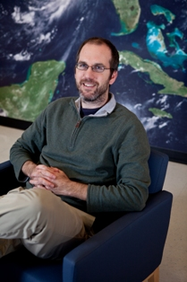

FUTURE SEAS
An end-to-end fisheries management strategy evaluation for future climate change in the California Current.
Future Seas is a project exploring potential impacts of climate change on the swordfish, albacore, and Pacific sardine fisheries in the California Current System. A suite of dynamical, statistical, and conceptual models is being applied to explore future scenarios in an “end-to-end” framework spanning physical changes to socio-economic consequences, and to evaluate uncertainty associated with individual elements of the modeling framework.
Research Team
- Michael Jacox
- Research Oceanographer
- NOAA-SWFSC
- Michael Alexander
- Meteorologist
- NOAA-Earth Systems Research Lab
- Steven Bograd
- Supervisory Research Oceanographer
- NOAA-SWFSC, UC Santa Cruz
- Stephanie Brodie
- Assistant Project Scientist
- UC Santa Cruz, NOAA-SWFSC
- Enrique Curchitser
- Associate Professor
- Rutgers
- Christopher Edwards
- Professor
- UC Santa Cruz
- Jerome Fiechter
- Assistant Professor
- UC Santa Cruz
- Jerome Fiechter
- Assistant Professor
- UC Santa Cruz
- Elliott Hazen
- Research Ecologist
- NOAA-SWFSC

- Amber Himes-Cornell
- Fishery Officer
- FAO Fisheries and Aquatic Division
- Barbara Muhling
- Project Scientist
- UC Santa Cruz, NOAA-SWFSC
- Mercedes Pozo Buil
- Postdoctoral Scholar
- UC Santa Cruz
- Ryan Rykaczewski
- Associate Professor
- University of South Carolina
- James Smith
- Assistant Project Scientist
- UC Santa Cruz, NOAA-SWFSC
- Stephen Stohs
- Economist
- NOAA-SWFSC
- Jonathan Sweeney
- Postdoctoral Scholar
- UC Santa Cruz, NOAA-SWFSC
- Desiree Tommasi
- Project Scientist
- UC Santa Cruz, NOAA-SWFSC
- Heather Welch
- Research Associate
- UC Santa Cruz, NOAA-SWFSC
Collaborators
- Gerard DiNardo
- FRD Director
- NOAA-SWFSC
- Alan Haynie
- Economist
- NOAA-AFSC

- Alistair Hobday
- Senior Principal Research Scientist
- CSIRO Oceans and Atmosphere
- Anne Hollowed
- Senior Scientist
- NOAA-AFSC, University of Washington
- Kirstin Holsman
- Research Fishery Biologist
- NOAA-AFSC
- Justin Hospital
- Economist
- NOAA-PIFSC

- Charles Stock
- Research Oceanographer
- NOAA-GFDL